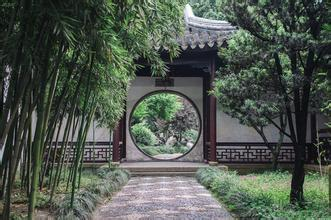
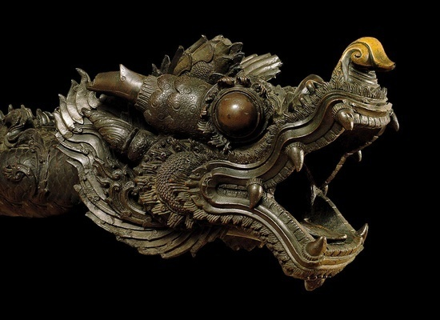

【课程推荐】中国文化精粹
 240
240
从宫廷史官到民间艺人，千百年来人们用各种方式感受着文化的变迁。《中国文化精粹系列》选取了中国文化中最具代表性的京剧、武术、茶艺、国画等13个文化类别，以点带面，通过这些具有典型性的文化类别来勾勒整个中国文化的全貌。
整个系列不再单纯地从知识性的角度来介绍文化，而是将文化还原¬成个体生命的感性存在，用人的生命体验去追寻文化的发展历程，将抽象的文化符号用一个个
具体可感的人物和故事来演绎，挖掘文化背后人的感受和人的命运。此外，本系列还展现了这些绵延千年的古老文化在今天的现实意义，以及在国际化趋势日益增强
的今天，这些文化所具有的独特民族个性。故事性、现代性和国际性是本系列片突出的特点。
◆ ◆ ◆
中国园林

中国园林至今为止已有三千多年的历史，在世界园林中自成体系，独具风格。本片详细介绍了中国园林的建筑特点，巧妙的空间设计以及中国园林中所蕴含的中国人天
人合一的哲学思想。在本片中，您会了解到园林建造者们的历史故事，感受到北方园林的皇家风范和南方苏州园林的精巧秀美，体会到园林设计者们的独特匠心，品
味到可观、可行、可游、可居的中国园林之趣。
中国雕塑

1974
年，一位普通的农民在打水井时，意外地发现了被尘封在地下达两千年之久的兵马俑。兵马俑的发掘使得人们把探寻的目光投向了源远流长的中国雕塑文化。由于历
代以来人们都把书画奉为庙堂的宝典，而把雕塑只看成是雕虫小技，所以中国的雕塑一直被人们所忽略，而本片却以详尽的事实和独特的视点展现了中国雕塑文化的
博大精深。您会惊叹于中国人所创造出来的绝不逊色于西方雕塑的艺术珍品。
中国国画

中国国画是一门集聚着中国文化精髓的艺术门类，它以笔、墨、纸、砚为工具，以人物、山水、花鸟、走兽等为内容，在世界美术中自成体系。本片以中国国画的代表
人物为线索，通过他们的艺术创作勾勒出中国国画发展的精神脉络。透过鲜活的个体生命体验来展示中国国画浓郁的水墨味道。在本片中，您不仅能够同宋代国画大
师们一起感受山水的情趣，而且能够与现代国画大师们一起探讨在中西文化的碰撞中中国国画的发展走向。
中国茶艺
中国是茶的故乡，是茶的原产地。中国人上至帝王将相、文人墨客，下至贩夫走卒、平民百姓，无不以茶为好。茶有健身、治疾之药物疗效，又富欣赏情趣，可陶冶情
操。本片从好山好水好茶、茶馆寻踪、茶道茶艺、佛禅茶趣等四个方面来展示中国茶文化的独特魅力。在本片中您不仅能够了解到中国名茶的自然生长环境，感受到
中国茶馆幽雅闲µ¬的韵致，而且还能亲眼目睹中国茶的独特品用方式。
中国宫廷服饰
中国的宫廷服饰曾是一种身份地位的象征，一种代表个人政治地位和社会地位的符号，中国的各个朝代对于皇帝、皇后和其他宫廷成员的帽子、头饰、衣服、鞋子，以
及衣服的颜色、图案、等级都有着极其严格的规定，宫廷服饰逐渐成为了封建皇权的一个象征物。本片详细记录了中国两千多年来宫廷服饰的演变过程，着重介绍了
宫廷服饰中有特殊含义的图案和颜色以及古代宫廷服饰对现代服装设计的影响。
中国丝绸
中国是世界丝绸的故乡，在远古时期由于中西交通不便，西方人对于这种来自于东方的薄如蝉翼的丝织品充满了神秘感，中国的丝绸与中国的瓷器一起给了西方人关于
东方的最初记忆。本片勾勒出了“北方草原丝绸之路”、“西南丝绸之路”、“海上丝绸之路”的发展脉络，展现了中国丝绸不断发展的制作工艺和各个朝代千差万
别的审美趣味。在片中您不仅能够了解到中国丝绸的制作工艺，丝绸之路上发生的传奇故事，还能欣赏到各个朝代风格各异的丝绸珍品。
中国少数民族服饰
一部人类服饰史，从某种意义上说，也是一部感性化了的人类文化发展史，在中国，这部感性的人类发展史是由56个民族共同完成的。本片选取了鄂伦春族、蒙古
族、满族、维吾尔族、藏族、羌族、彝族、哈尼族、傣族、苗族、壮族、白族、侗族等十三个富有代表性的中国少数民族服饰，通过介绍这些民族的服饰特点来展现
中国多彩的服饰文化。在本片中您不仅能体会到这些民族服饰特殊的文化含义，而且能够了解到中国各民族服饰相互交融、相互影响的发展历程。
中国饮食
中国的饮食文化源远流长，在几千年的传承中，中国饮食早已超越了“吃”的概念，中国人将吃看作是一种沟通感情的特殊方式而与文化交融。本片不仅着重介绍了中
国的八大菜系，以此来展现中国饮食文化中对于选料、刀功、火候等的特殊要求，而且还强调了小吃和面食在中国饮食文化中所占的特殊地位。在本片中您不仅能够
欣赏到大厨们的精湛烹饪技艺，看到各种各样精美的食品，而且还能感受到融入饮食中的中国人浓浓的情感世界。
中国京剧
在安徒生的笔下有一只夜莺，它能唱出世界上最美的歌，在中国也有这样的一只夜莺，它的名字叫京剧。它就像一只朝气勃勃的、欢快歌唱的夜莺，散发着永远的魅
力。本片运用幽默生动的语言介绍了中国京剧中的脸谱、唱腔、程式、道具、扮相，用一个个具体可感的故事描述了中国京剧的发展历程。在本片中，您不仅可以了
解到许多与京剧相关的传奇故事，感受到中国京剧处于鼎盛时期的恢宏场面，还能欣赏到许多由中国着名京剧艺术家表演的经¬典曲目。
中国医药
中国医药具有悠久的历史，千年的传承和积累使得中国医药形成了一套较为完善而富有民族特色的养生观和养生术，创造了独特的养生文化。本片以时间为线索，追踪
了中国医药的发展轨迹，讲述了神农氏、扁鹊、张仲景、李时珍等医药人物的传奇故事，详细介绍了中国独特的配药和治疗方法。在本片中您不仅能够了解中药的制
药过程以及阴阳学说、切脉诊断、四诊法、针灸疗法等一系列医学病理和临床治疗方法，而且能够深切感受中国医药中所蕴含的独特养生观念。
课程链接：中国文化精粹